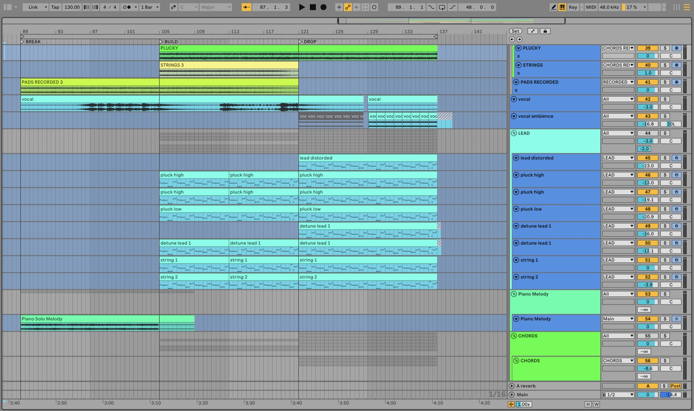

Harmony
Matisse & Sadko
Hecha desde cero y de oído. No son stems ni un pack de loops: es el archivo con el que trabajo.

130BPM
F minTonalidad
131Pistas en 12 grupos
.alsProyecto de Live
Lo que hay dentro
- 01El arreglo completo. De la intro al último compás, con las pistas nombradas y agrupadas tal y como las tengo yo.
- 02Todos los racks y cadenas de efectos. Cada dispositivo en su orden y con sus ajustes. Desactiva uno y oye qué aportaba.
- 03Todas las automatizaciones. Filtros, envíos y volúmenes, en su sitio — la mitad de por qué el tema respira.
- 04El MIDI de cada parte. Cambia las notas y ya es tuyo.
Con qué está hecho
El 61 % de las cadenas son dispositivos que Live ya trae puestos. Lo demás son plugins de terceros — y aquí tienes cuáles, por si no los tienes.
Esto ya lo tienes · de serie en Live
EQ EightUtilityAudio Effect RackCompressorLFODelayAuto FilterReverbImpulseFilter DelayGlue CompressorLimiterGateDrum BussMultiband DynamicsSaturatorAuto PanPhaserCorpusSimplerEnvelope FollowerShaper
De terceros
- FabFilter Pro-Q 3FabFilterTDR Nova · EQ Eight de Ableton
- Kickstart 2CableguysCompressor de Ableton en sidechain
- SerumXferVital
- OTTXferEs gratuito
- Sylenth1LennarDigitalSurge XT
- GullfossSoundtheorySin equivalente gratuito
- BBC Symphony OrchestraSpitfireBBC Symphony Discover, gratis
- CamelCrusherCamel AudioEs gratuito
- NexusreFXEs una ROMpler: no hay equivalente libre
- Valhalla VintageVerbValhallaValhalla Supermassive, del mismo fabricante
- Eos 2Audio DamageReverb de Ableton
- EchoBoySoundtoysEcho de Ableton
- ShaperBox 3CableguysAuto Filter y Auto Pan cubren parte
- VitaminWavesMultiband Dynamics de Ableton
- SSL G-CompWavesGlue Compressor de Ableton
- Sausage FattenerDada LifeSaturator de Ableton
- Addictive KeysXLN AudioLos pianos de la Core Library de Live
- Guitar Rig 5Native InstrumentsGuitar Rig Player, gratis
- SpireReveal SoundSurge XT
- Kontakt 7Native InstrumentsKontakt Player, gratis
- Ozone 5 ImageriZotopeOzone Imager, gratis
- FabFilter Pro-L 2FabFilterLimiter de Ableton
- FasterMasterMastering The MixLimiter + EQ Eight de Ableton
- SPANVoxengoEs gratuito
Si te falta alguno, el proyecto se abre igual y Live solo marca ese dispositivo: el arreglo, el MIDI y las automatizaciones siguen en su sitio.
El MIDI, gratisPiano y pads con strings de este tema, tal y como salen de la sesión. Sin pagar nada.
Descargar el MIDI ↗Ver el despiece completo en YouTube ↗
Es mi propia recreación, hecha de oído. No contiene audio, samples ni material del lanzamiento original. Puedes publicar lo que hagas con ella; no puedes revender ni redistribuir el archivo del proyecto.